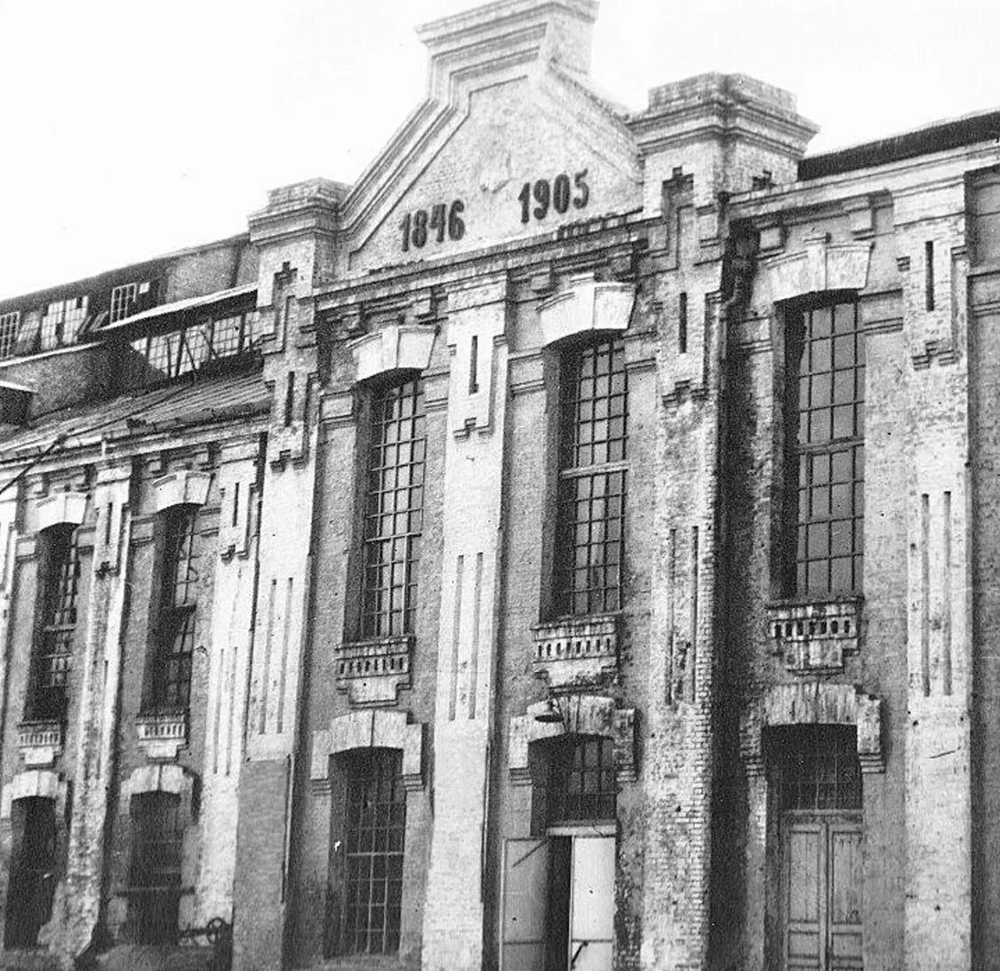
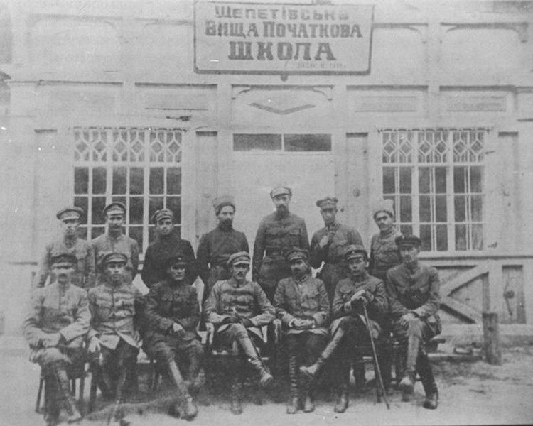
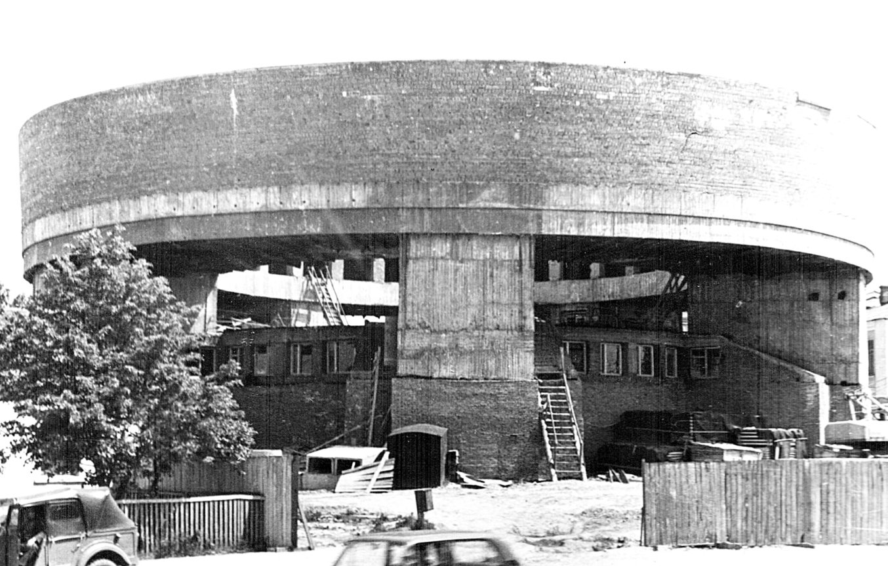

 Після другого поділу Речі Посполитої 1793 року Шепетівка входила до складу Ізяславського повіту Волинської губернії Російської імперії. У 1846 році князь Євстафій Сангушко побудував цукроварню, яка того ж року видала першу продукцію. 1859 року онука Євстафія Сангушка Марія виходить заміж за графа Альфреда Потоцького і містечко переходить у власність Потоцьких, стає центром управління величезними графськими маєтностями загальною площею 105 тисяч десятин землі. У 1865 році у Шепетівці відкрите однокласне училище, а з 1872 року — парафіяльна школа. У цей час функціонує земська лікарня на 25 ліжок, 2 медичних пункти, приватна аптека, водолікарня. Читати далі..
У березні 1917 року у Шепетівці створюються органи влади Центральної Ради. Поряд з ними існувала влада Тимчасового уряду. У грудні 1917 року в містечку проголошено радянську владу. Та вже через кілька днів у Шепетівці знову відновлено владу Центральної Ради, війська якої увійшли до містечка. На початку січня 1918 року у Шепетівці знову проголошено радянську владу. У лютому 1918 року містечко опинилося під владою Центральної Ради. Пізніше, у травні 1918 року, у Шепетівці на зміну Центральній Раді приходять урядники гетьмана Павла Скоропадського, які пробули тут майже до кінця року. Потім влада перейшла до Директорії. Читати далі.. 
 У другій половині листопада 1920 року у Шепетівці остаточно закріпилася більшовицька влада. 20 вересня 1921 року повстанський загін генерала В. Нельговського (генерал-хорунжий армії УНР), що перейшов в Україну, мав налагодити зв’язок між Волинською групою Тютюнника і повстанськими загонами Волині. Читати далі..